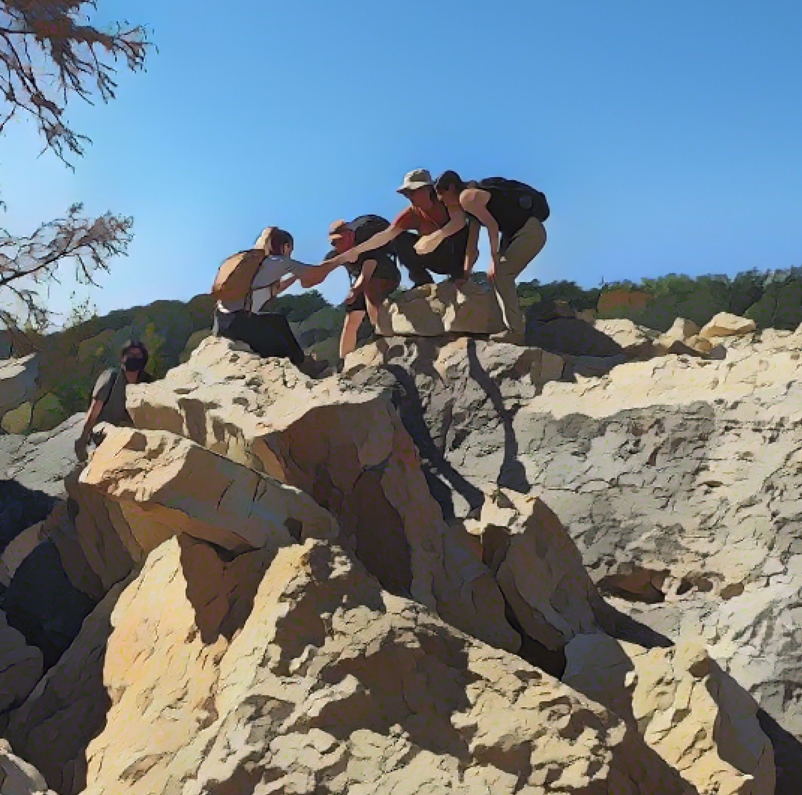
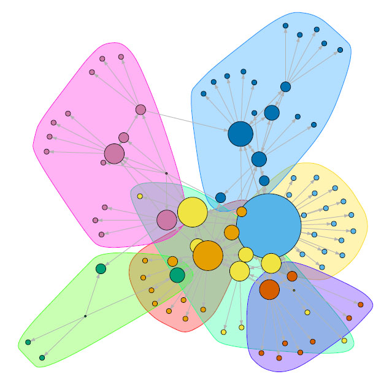
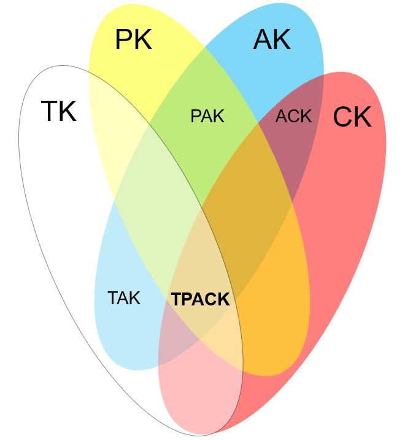

Affect and Narrative in (Inter)Disciplinary Identity Development
Expanding upon canonical cognitive and sociocultural studies of learning for conceptual change, expertise and mastery, I do mixed methods design-based research that considers the affective dynamics and narrative aspects of learning as a process of meaning-making and identity formation within and among disciplines and communities. By paying attention to the conceptual and affective work of learners, we can provide more holistic accounts of how they position themselves and make progress in the development of socially and ethically articulate identities. Such identities can help learners pesist in and change their disciplines.

Learning Accross Disciplines and COmmunities in Open and Participatory Media Ecologies
Contemproray participatory media enables the fluid formation and disruption of learning networks, presenting a challenge to traditional notions of learning as a highly disciplined, community-bound activity. I use ethnographic, computational and multimodal approaches to study cases of participatory and connected learning, including networks of urban ed-tech innovators, student scientists undertaking course-based research, citizen scientists, and community teaching artists. This research reveals what 21st century skills of connected and lifelong learning really look like in the digital wild, and informs the design of better, more relevant and equitable open learning and innovation networks.

Values-sensitive Technology Innovation
Technology is too often presumed to be neutral, good or inevitable, and as such it tends to be engaged in ways that ultimately re-inforce the educational and social orthodoxy. I study how innovative teachers and technology entrepreneurs position themselves with respect to the educational status quo in order to expand our understanding of what counts as innovative in education, and who counts as an innovator. By more consistently surfacing the values and ethical implications of technology engagment in educational contexts, I hope to identify and support the kind of critical innvoations and critical innovators that stand a chance of “disrupting” entrenched notions of what school is, could, and should be.

Design Research on Global and Distance Education
I create experiences that engage learners in activities and environments that reflect the cultural and infrastructural contexts in which they aspire to act. For over 15 years, I have designed, taught in and taught about online learning experiences and digital infrastructure for global education, development, and health sciences. I am particularly interested in the design of international distance education activities that carefully link global goals and resources with local communities and priorities. I have evaluated and disseminated findings on distance and online programs as cases of blended instruction, professional development, training, digital assessment, and alternative credentialing, and have carried out this work in university, international NGO and grassroots organizational contexts.
apapendieck@utexas.edu